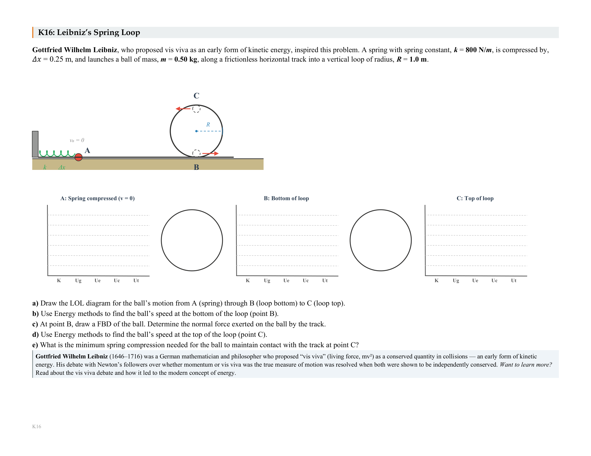

Brendan Wischweh · Physics & Engineering teacher
A physics teacher’s classroom, rebuilt with Claude Code.
An AI-native curriculum platform in weekly production use — generating assessments with computed diagrams, grading scanned paper locally, and writing every student a narrative report.
The demo
The whole loop, on screen.
A test generated, gated, graded, and turned into feedback — in the system’s weekly production form. Format in progress: film or interactive walkthrough.
(film · scroll walkthrough · interactive)
What it is
One platform, three jobs.
Generate
Assessments, homework, reviews, and step-by-step solution guides — with computed physics diagrams emitted as editable Word objects. Every class period gets its own parallel version: same concepts, same difficulty, different problems.
Grade
Scanned answer sheets, graded by a local pipeline — no model calls in the main path. It handles skewed, wrinkled, real-world scans; the ~1% it isn’t sure about is flagged for review, and every answer-key correction is teacher-approved.
Feedback
Personalized narrative feedback, the main feature: after every assessment, every student gets a written report — what their reasoning shows, which targets they own, which to revisit, the exact problems to retry. It describes; it never ranks. And a sub-goal, teaching the teacher: the same machinery audits the course itself against my stated values.
Artifact gallery
The work, as it ships.



Deliberately over-filled — the final page keeps 4–6 of these. Every roster and report shown uses fictional names.
The numbers, dated
Measured, not estimated.
How it’s built
For the technical reader.
- Hexagonal core Domain logic stays pure; dependencies point inward only.
- Completeness gates The system may draft; it may not ship. Failing artifacts are rejected, not patched.
- Regenerate, don’t patch Fixes land in the shared library; every artifact re-derives; old versions retire.
- Proved physics 581 relations Lean-proved and enforced as property-test laws, with negative controls.
- Local-first grading A deterministic pipeline on scanned paper — no model calls in the grading path.
- Dated claims Every number on this page carries the day it was verified.
The whole system, drawn as a hexagon — read the architecture page →